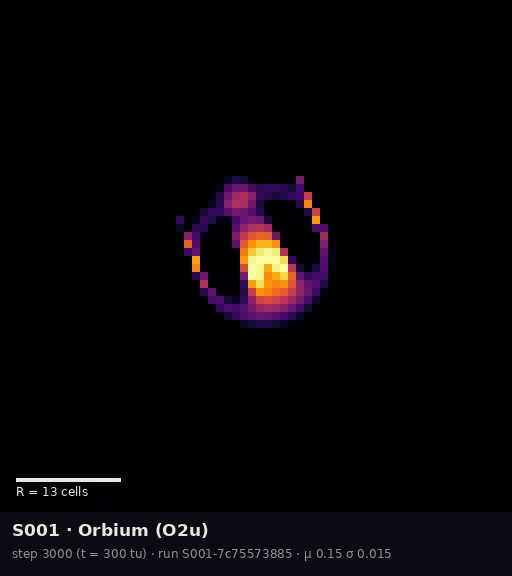
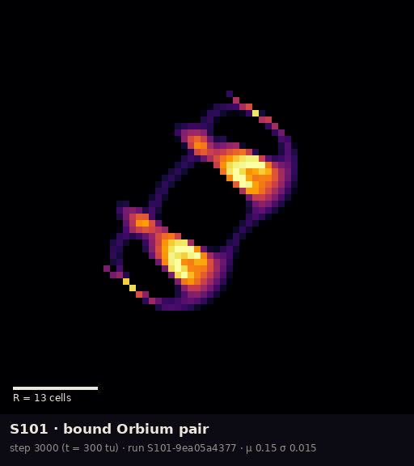
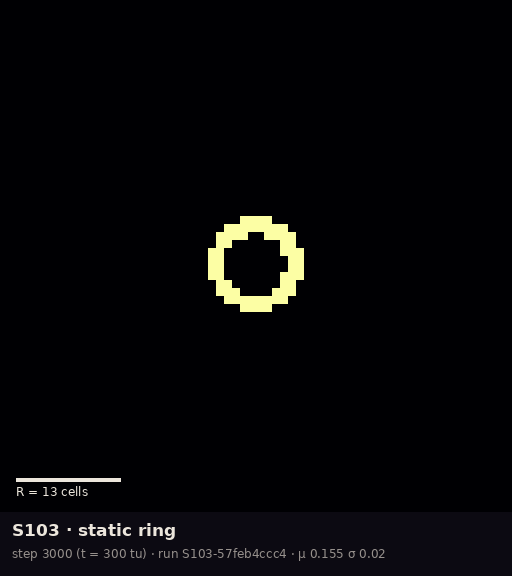

Reference
The collection
Four specimens, each with a stable ID, a saved starting state that rebuilds bit for bit, and a dossier. IDs starting S0 are reference specimens from the upstream catalogue; S1 are field finds. Names are the registered ones: no specimen has earned a nickname.

Rule μ 0.15, σ 0.015 · glides · C001indep. checked
dossier · run S001-7c75573885

Rule μ 0.15, σ 0.015 · glides as a pair · C041observed
dossier · run S101-9ea05a4377

Rule μ 0.155, σ 0.020 · circles · C038reproduced C047indep. checked
dossier · run S102-12fd60e362

Rule μ 0.155, σ 0.020 · holds still · C042reproduced
dossier · run S103-57feb4ccc4
Shared conditions
Unless a card says otherwise: kernel radius R = 13 cells, timestep 1/10 (T = 10), polynomial kernel and growth functions with a single ring, Euler steps with a hard clip to [0, 1], 64-bit floats, and a 128 × 128 world that wraps at the edges. All three field finds are catalogued species carried to a nearby rule C043observed.
| ID | Mass (R²) | Speed (R per time unit) | Behaviour, steps 1000–3000 |
|---|---|---|---|
| S001 | 0.4358 | 0.479 | straight line, heading 68.2° |
| S101 | 0.8736 | 0.473 | straight line, heading 35.5° |
| S102 | 0.522 | net 0.003 | tight circle |
| S103 | 0.3787 | 0 | final state identical to the first |
Speeds depend on the timestep and headings on the grid (Room 1), so treat them as properties
of these runs. Values from the gallery's specimen table;
each run's full rule, environment and hashes are in its manifest.json.